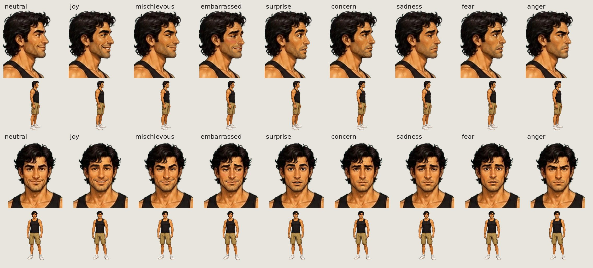

<title>Shortest Night Animation Review</title>
<meta name="claude:viewport-fit-sides" content="cover">
<link rel="preconnect" href="https://fonts.googleapis.com">
<link rel="stylesheet" href="https://fonts.googleapis.com/css2?family=Fraunces:opsz,wght@9..144,500;9..144,700&family=Source+Sans+3:wght@400;600&family=JetBrains+Mono:wght@400&display=swap">
<style>
/* layout: a screening-room contact sheet; sections stack, clips sit in a wrapping grid */
:root {
  --bg: #efeae4; --panel: #e4ddd5; --ink: #231f26; --muted: #6b6270; --accent: #8a3b5c; --ok: #2f6b4f; --wait: #9a5b12; --screen: #2e2b34;
  --display: "Fraunces", Georgia, serif; --body: "Source Sans 3", system-ui, sans-serif; --mono: "JetBrains Mono", ui-monospace, monospace;
}
@media (prefers-color-scheme: dark) { :root:not([data-theme="light"]) {
  --bg: #1b1920; --panel: #25222b; --ink: #ece6ee; --muted: #a39aa8; --accent: #d38aa8; --ok: #7cc4a0; --wait: #e2a85a; --screen: #2e2b34; color-scheme: dark } }
:root[data-theme="dark"] { --bg: #1b1920; --panel: #25222b; --ink: #ece6ee; --muted: #a39aa8; --accent: #d38aa8; --ok: #7cc4a0; --wait: #e2a85a; --screen: #2e2b34; color-scheme: dark }
body { background: var(--bg); color: var(--ink); font: 16px/1.5 var(--body); }
main { max-width: 1240px; margin: 0 auto; padding-block: 32px 64px; padding-left: max(16px, env(safe-area-inset-left, 0px)); padding-right: max(16px, env(safe-area-inset-right, 0px)); display: grid; gap: 48px; }
header h1 { font: 700 clamp(30px, 5vw, 46px)/1.05 var(--display); margin: 0 0 10px; text-wrap: balance; }
header p { margin: 0; max-width: 65ch; color: var(--muted); }
.eyebrow { font: 400 12px var(--mono); letter-spacing: .08em; text-transform: uppercase; color: var(--accent); margin-bottom: 8px; }
section h2 { font: 500 26px/1.2 var(--display); margin: 0 0 6px; text-wrap: balance; }
section > p { margin: 0 0 18px; max-width: 65ch; color: var(--muted); }
.grid { display: grid; gap: 18px; grid-template-columns: repeat(auto-fill, minmax(min(100%, 340px), 1fr)); }
.grid.walks { grid-template-columns: repeat(auto-fill, minmax(min(100%, 180px), 1fr)); }
.clip { margin: 0; display: grid; gap: 8px; min-width: 0; }
.clip video, .clip img { width: 100%; max-width: 100%; display: block; background: var(--screen); border-radius: 6px; }
figcaption { font-size: 15px; display: flex; flex-wrap: wrap; align-items: baseline; gap: 4px 8px; min-width: 0; }
.tech { flex-basis: 100%; font: 400 12px var(--mono); color: var(--muted); overflow-wrap: anywhere; }
.pill { font: 600 11px var(--body); letter-spacing: .04em; text-transform: uppercase; padding: 1px 8px; border-radius: 99px; border: 1px solid currentColor; }
.pill.ok { color: var(--ok); } .pill.wait { color: var(--wait); }
.note { background: var(--panel); border-radius: 8px; padding: 14px 18px; max-width: 70ch; }
.note b { font-weight: 600; }
.wide { overflow-x: auto; } .wide img { max-width: none; width: 1400px; }
@media (prefers-reduced-motion: reduce) { .walk video { animation: none; } }
</style>
<main>
<header>
  <div class="eyebrow">Game II · The Shortest Night · 29 October</div>
  <h1>Every animation in the game, and the ones waiting for you</h1>
  <p>Walks loop silently. Talking clips play with the voice: press play. Every clip is rendered from the game's own files, the same paintings and patches the game draws.</p>
</header>
<section>
  <div class="eyebrow">In the game</div>
  <h2>Alan walking</h2>
  <p>The only full-body animation left in the game: both outfits, three directions. Everyone else stands on their painting.</p>
  <div class="grid walks"><figure class="clip walk"><video src="walk_alanv_walk_side.mp4" autoplay muted loop playsinline preload="metadata"></video><figcaption><b>tank top</b> · walking side<span class="tech">alanv_walk_side · 36 frames · 12 fps</span></figcaption></figure><figure class="clip walk"><video src="walk_alanv_walk_front.mp4" autoplay muted loop playsinline preload="metadata"></video><figcaption><b>tank top</b> · walking towards us<span class="tech">alanv_walk_front · 36 frames · 12 fps</span></figcaption></figure><figure class="clip walk"><video src="walk_alanv_walk_back.mp4" autoplay muted loop playsinline preload="metadata"></video><figcaption><b>tank top</b> · walking away<span class="tech">alanv_walk_back · 36 frames · 12 fps</span></figcaption></figure><figure class="clip walk"><video src="walk_alanb_walk_side.mp4" autoplay muted loop playsinline preload="metadata"></video><figcaption><b>blazer</b> · walking side<span class="tech">alanb_walk_side · 36 frames · 12 fps</span></figcaption></figure><figure class="clip walk"><video src="walk_alanb_walk_front.mp4" autoplay muted loop playsinline preload="metadata"></video><figcaption><b>blazer</b> · walking towards us<span class="tech">alanb_walk_front · 36 frames · 12 fps</span></figcaption></figure><figure class="clip walk"><video src="walk_alanb_walk_back.mp4" autoplay muted loop playsinline preload="metadata"></video><figcaption><b>blazer</b> · walking away<span class="tech">alanb_walk_back · 36 frames · 12 fps</span></figcaption></figure></div>
</section>
<section>
  <div class="eyebrow">In the game, except Alan's front view</div>
  <h2>Talking and blinking</h2>
  <p>Each figure says one of their lines with the lip-sync mouths, blinks, then stays quiet for a moment. Alan's side faces were redone today from the cleaned-up hair and checked at 5x over a dark room colour for pale specks at the jaw. His front view's mouths are new and wait for your approval.</p>
  <div class="grid"><figure class="clip talk"><video src="talk_alanv_side_k.mp4" controls playsinline preload="metadata"></video><figcaption><b>Alan</b> · tank top, side <span class="pill ok">in the game</span><span class="tech">alanv_side_k · line alan_ask_baute_cave</span></figcaption></figure><figure class="clip talk"><video src="talk_alanb_side_k.mp4" controls playsinline preload="metadata"></video><figcaption><b>Alan</b> · blazer, side <span class="pill ok">in the game</span><span class="tech">alanb_side_k · line alan_ask_baute_cave</span></figcaption></figure><figure class="clip talk"><video src="talk_alanv_front_k.mp4" controls playsinline preload="metadata"></video><figcaption><b>Alan</b> · tank top, front <span class="pill wait">waiting for you</span><span class="tech">alanv_front_k · line alan_ask_baute_cave</span></figcaption></figure><figure class="clip talk"><video src="talk_baute2_k.mp4" controls playsinline preload="metadata"></video><figcaption><b>Baute</b> <span class="pill ok">in the game</span><span class="tech">baute2_k · line alan_fail_baute_item</span></figcaption></figure><figure class="clip talk"><video src="talk_carmen_c.mp4" controls playsinline preload="metadata"></video><figcaption><b>Carmen</b> <span class="pill ok">in the game</span><span class="tech">carmen_c · line alan_fail_carmen_item</span></figcaption></figure><figure class="clip talk"><video src="talk_chano2_k.mp4" controls playsinline preload="metadata"></video><figcaption><b>Chano</b> <span class="pill ok">in the game</span><span class="tech">chano2_k · line chano_any</span></figcaption></figure><figure class="clip talk"><video src="talk_derek_c.mp4" controls playsinline preload="metadata"></video><figcaption><b>Derek</b> <span class="pill ok">in the game</span><span class="tech">derek_c · line derek_th_bye</span></figcaption></figure><figure class="clip talk"><video src="talk_fermin_c.mp4" controls playsinline preload="metadata"></video><figcaption><b>Don Fermín</b> <span class="pill ok">in the game</span><span class="tech">fermin_c · line fermin_belfry_again</span></figcaption></figure><figure class="clip talk"><video src="talk_pino_c.mp4" controls playsinline preload="metadata"></video><figcaption><b>Doña Pino</b> <span class="pill ok">in the game</span><span class="tech">pino_c · line pino_bye</span></figcaption></figure><figure class="clip talk"><video src="talk_gail_c.mp4" controls playsinline preload="metadata"></video><figcaption><b>Gail</b> <span class="pill ok">in the game</span><span class="tech">gail_c · line gail_w_again</span></figcaption></figure><figure class="clip talk"><video src="talk_mercedes_c.mp4" controls playsinline preload="metadata"></video><figcaption><b>Mercedes</b> <span class="pill ok">in the game</span><span class="tech">mercedes_c · line mercedes_bye</span></figcaption></figure><figure class="clip talk"><video src="talk_montesdeoca_c.mp4" controls playsinline preload="metadata"></video><figcaption><b>Montesdeoca</b> <span class="pill ok">in the game</span><span class="tech">montesdeoca_c · line montesdeoca_t_again</span></figcaption></figure><figure class="clip talk"><video src="talk_nieves_c.mp4" controls playsinline preload="metadata"></video><figcaption><b>Nieves</b> <span class="pill ok">in the game</span><span class="tech">nieves_c · line nieves_fax_in</span></figcaption></figure><figure class="clip talk"><video src="talk_rafa_c.mp4" controls playsinline preload="metadata"></video><figcaption><b>Rafa</b> <span class="pill ok">in the game</span><span class="tech">rafa_c · line rafa_3</span></figcaption></figure><figure class="clip talk"><video src="talk_clerk_c.mp4" controls playsinline preload="metadata"></video><figcaption><b>The clerk</b> <span class="pill ok">in the game</span><span class="tech">clerk_c · line clerk_2</span></figcaption></figure><figure class="clip talk"><video src="talk_guard_c.mp4" controls playsinline preload="metadata"></video><figcaption><b>The guard</b> <span class="pill ok">in the game</span><span class="tech">guard_c · line guard_th_1</span></figcaption></figure><figure class="clip talk"><video src="talk_surfer_c.mp4" controls playsinline preload="metadata"></video><figcaption><b>The surfer</b> <span class="pill ok">in the game</span><span class="tech">surfer_c · line surfer_bark_1</span></figcaption></figure><figure class="clip talk"><video src="talk_vascos_side_k.mp4" controls playsinline preload="metadata"></video><figcaption><b>Vasco</b> <span class="pill ok">in the game</span><span class="tech">vascos_side_k · line vasco_anchor_cm</span></figcaption></figure><figure class="clip talk"><video src="talk_yeray_c.mp4" controls playsinline preload="metadata"></video><figcaption><b>Yeray</b> <span class="pill ok">in the game</span><span class="tech">yeray_c · line yeray_bar_3</span></figcaption></figure></div>
</section>
<section>
  <div class="eyebrow">Test · not in the game</div>
  <h2>Alan's emotions</h2>
  <p>Only the brows, eyes and mouth change. While he talks, the brows and eyes keep the emotion over the lip-sync mouth; when he is quiet, the emotion's own mouth shows. Blinks work in every emotion.</p>
  <div class="grid">
    <figure class="clip talk"><video src="emo_side.mp4" controls playsinline preload="metadata"></video><figcaption><b>Side view</b> · one line in each emotion<span class="tech">neutral, joy, fear, anger, sadness, concern, surprise, embarrassed, mischievous</span></figcaption></figure>
    <figure class="clip talk"><video src="emo_front.mp4" controls playsinline preload="metadata"></video><figcaption><b>Front view</b> · one line in each emotion<span class="tech">same nine, with the new front mouths</span></figcaption></figure>
  </div>
  <figure class="clip" style="margin-top:18px"><div class="wide"></div><figcaption><b>All nine on both views</b><span class="tech">scroll sideways</span></figcaption></figure>
</section>
<section class="note"><b>Not on this page:</b> Don Lolo, who only blinks (he has no lines with lip-sync); the rooms' ambient motion (approved earlier); and the cast repaints, which are still being made in Canva. The emotions need an engine layer and a tag per line before they can go in.</section>
</main>
